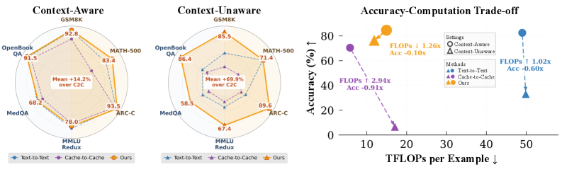
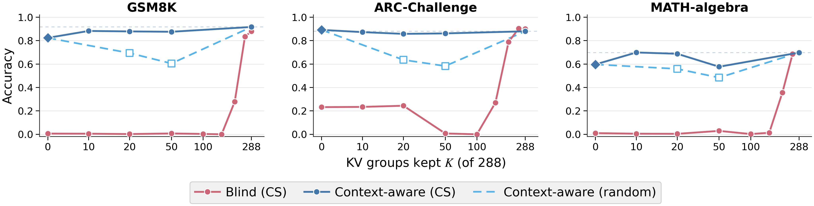
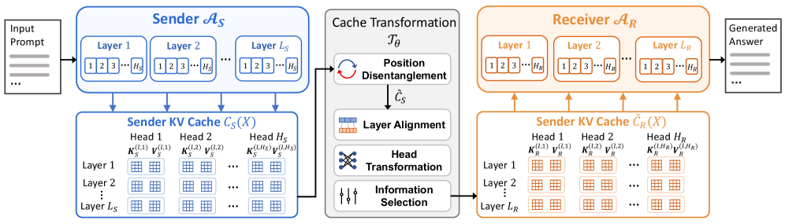
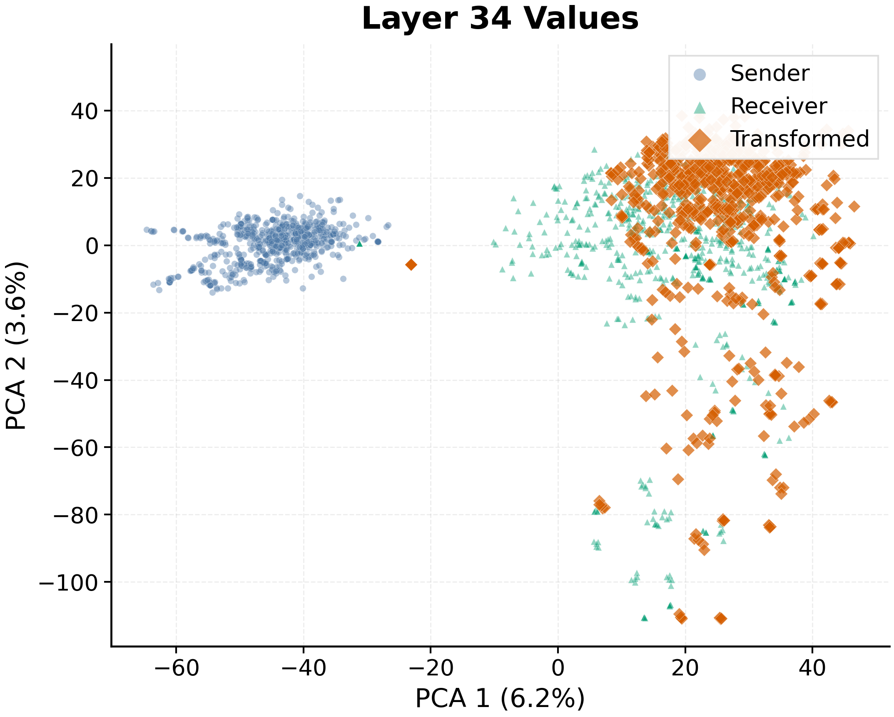

Overview — the logical flow개요 — 전체 논리 흐름
Figures from the paper논문 원본 그림




Comprehensive walkthrough전체 내용 정리
Problem & Motivation문제 및 동기
LLM multi-agent systems (AutoGen, MetaGPT, and kin) coordinate specialized agents — planners, retrievers, executors — almost always through natural-language text. Text is interpretable but forces a decode-and-re-encode cycle at every hop: the sender serializes its internal state into tokens, the receiver re-embeds them, and rich intermediate representations are lost in between. Latent communication instead shares internal signals directly, and KV-caches are an attractive medium because they act as pre-computed memory the receiver can attend to without parsing language. The catch: nearly all prior KV-cache work is homogeneous — identical sender and receiver — so the caches are trivially aligned. The few heterogeneous methods assume a shared input and use the cache only to steer. This paper targets the genuinely hard case: dense, cross-model KV transfer between agents that differ in depth, width, head geometry, and positional encoding.
LLM 멀티에이전트 시스템(AutoGen, MetaGPT 등)은 계획자·검색자·실행자 같은 특화 에이전트를 거의 항상 자연어 텍스트로 조율한다. 텍스트는 해석 가능하지만 매 단계 디코딩·재인코딩을 강제한다: 송신자가 내부 상태를 토큰으로 직렬화하고, 수신자가 재임베딩하며, 그 사이 풍부한 중간 표현이 소실된다. 잠재 통신은 대신 내부 신호를 직접 공유하고, KV-cache는 수신자가 언어 파싱 없이 어텐션할 수 있는 사전 계산 메모리라 매력적이다. 함정: 거의 모든 선행 KV-cache 연구는 동질(송·수신 동일)이라 캐시가 자명하게 정렬된다. 소수의 이질 기법도 공유 입력을 가정하고 캐시를 조종에만 쓴다. 이 논문은 진짜 어려운 경우 — 깊이·폭·헤드 기하·위치 인코딩이 다른 에이전트 간 조밀한 cross-model KV 전이 — 를 겨냥한다.
Background — two axes that structure the paper배경 — 논문을 구조화하는 두 축
The paper separates homogeneous vs heterogeneous (are the models identical?) from context-aware vs context-unaware (does the receiver also see the original question?). The second axis is the conceptual lever. In context-aware communication the receiver already holds the input, so the transferred cache is an auxiliary reasoning signal — the setting almost all prior work evaluates. In context-unaware communication the receiver sees nothing but the transferred cache and must reconstruct both the evidence and the reasoning from it alone. The authors argue this stricter regime is what actually tests whether a latent channel is information-preserving, and it maps to real deployments: efficient model switching, avoiding redundant context re-encoding, and settings where the raw input cannot be shared downstream.
논문은 동질 vs 이질(모델이 같은가?)과 context-aware vs context-unaware(수신자가 원 질문도 보는가?)를 분리한다. 둘째 축이 개념적 지렛대다. context-aware 통신에선 수신자가 이미 입력을 쥐고 있어 전이 캐시는 보조 추론 신호다 — 거의 모든 선행 연구가 평가하는 설정. context-unaware 통신에선 수신자가 전이 캐시 외엔 아무것도 못 보고, 그것만으로 증거와 추론을 모두 복원해야 한다. 저자들은 이 더 엄격한 영역이야말로 잠재 채널이 정보 보존적인지를 실제로 시험하며, 효율적 모델 전환·중복 맥락 재인코딩 회피·원 입력을 하류로 공유 못 하는 상황 같은 실배치에 대응한다고 주장한다.
The information bottleneck — compressed-sensing method정보 병목 — 압축 센싱 방법
To measure what a KV cache actually carries, the authors run a post-hoc compressed-sensing (CS) probe in a controlled homogeneous self-communication setup (Qwen3-4B as both sender and receiver, identity cache pass-through), removing cross-model misalignment as a confound. Qwen3-4B has 36 layers × 32 query heads = 1152 query heads, organized under GQA into 288 KV groups (4 query heads each). They draw M=200 binary masks, each zeroing ~5% (~58) of query heads, run the full pipeline on 100 samples per mask, and center each accuracy by the unablated baseline. A Lasso regression (α=10−4) recovers per-head importance; the 4 query-head coefficients in each GQA group are summed into a KV-group score. Stage 2 then sweeps K ∈ {10,20,50,100,150,288}, keeping only the top-K KV groups. They are careful about CS recovery limits: with M=200 over 1152 heads, only ~70–80 coefficients are statistically reliable, so the headline curve is restricted to K ≤ 150 on the CS side.
KV 캐시가 실제로 무엇을 나르는지 재려고, 저자들은 통제된 동질 자기통신 설정(Qwen3-4B를 송·수신 모두로, 항등 캐시 통과)에서 사후 압축 센싱(CS) 프로브를 돌려 cross-model 불일치를 교란요인에서 제거한다. Qwen3-4B는 36층 × 32 쿼리 헤드 = 1152 쿼리 헤드, GQA로 288 KV 그룹(각 4 쿼리 헤드). M=200개 이진 마스크로 각각 ~5%(~58) 헤드를 0으로 만들고, 마스크당 100 샘플에 전체 파이프라인을 돌린 뒤 각 정확도를 무-절제 기준으로 중심화한다. Lasso 회귀(α=10−4)가 헤드별 중요도를 복원하고, 각 GQA 그룹의 4개 쿼리 헤드 계수를 합해 KV 그룹 점수로 만든다. 2단계는 K ∈ {10,20,50,100,150,288}을 훑어 상위 K KV 그룹만 남긴다. CS 복원 한계도 주의한다: 1152 헤드에 M=200이면 ~70–80 계수만 통계적으로 신뢰 가능해, 핵심 곡선은 CS 쪽에서 K ≤ 150으로 제한한다.
The duality — sparse reasoning vs dense knowledge이중성 — 희소 추론 vs 조밀 지식
The results (Figure 5) split cleanly. Context-aware: keeping just K=10 of 288 groups (~3.5%) already matches the full-cache ceiling — GSM8K 0.883 vs 0.917, ARC-C 0.873 vs 0.880, MATH-algebra 0.699 vs 0.698 — because the receiver's own input supplies the task content; the channel only adds a small reasoning steer (its lift over the K=0 single-agent receiver is ≤~10pp on MATH-algebra, <2pp on ARC-C). But which heads matter: at K=50 CS selection scores 0.876/0.862/0.577 vs random's 0.605/0.583/0.484 (+27/+28/+9pp), and unguided pruning can drop below the receiver-only baseline. Context-unaware: the same compression behaves totally differently — accuracy stays near chance for K ≤ 150 (≤52% of the cache), rises sharply between K=150 and 200 (ARC-C 0.27→0.79, GSM8K 0.00→0.28), and only approaches the ceiling at K=250 (87%). So the channel needs ~25× more of the cache to stand alone than to steer. This is the paper's scientific core, and it's a clean, memorable result.
결과(Figure 5)는 깔끔하게 갈린다. Context-aware: 288 중 K=10(~3.5%)만 남겨도 이미 전체 캐시 천장에 도달 — GSM8K 0.883 vs 0.917, ARC-C 0.873 vs 0.880, MATH-algebra 0.699 vs 0.698 — 수신자 자기 입력이 과제 내용을 대므로 채널은 작은 추론 조종만 더한다(K=0 단일 수신자 대비 상승은 MATH-algebra ≤~10pp, ARC-C <2pp). 그러나 어떤 헤드냐가 중요하다: K=50에서 CS 선택은 0.876/0.862/0.577, 무작위는 0.605/0.583/0.484(+27/+28/+9pp)이고, 무유도 가지치기는 수신자 전용 기준 아래로도 떨어질 수 있다. Context-unaware: 같은 압축이 전혀 다르게 행동 — K ≤ 150(캐시 ≤52%)까지 우연 수준, K=150~200에서 급상승(ARC-C 0.27→0.79, GSM8K 0.00→0.28), K=250(87%)에서야 천장 근처. 즉 채널이 조종할 때보다 홀로 설 때 캐시가 ~25× 더 필요하다. 이것이 논문의 과학적 핵심이고, 깔끔하고 기억에 남는 결과다.
Architecture — the cache transformation 𝒯θ아키텍처 — 캐시 변환 𝒯θ
Given the duality, the adapter must be dense (preserve most of the cache) yet selective (emphasize reasoning heads). Its design has three moving parts. Position disentanglement: RoPE entangles content and position, and two models use different RoPE conventions, so the sender cache is first passed through RemoveRoPE; 𝒯θ operates on the position-free content, and the receiver's AddRoPE restores native positions afterward. Layer alignment: a monotonic depth-preserving map a(l)=round(l(LS−1)/(LR−1)) sends each receiver layer to a sender layer, preserving the low→high feature ordering across different depths. Per-head gated transformation: for each receiver KV group, separate per-token MLPs for keys and values expand the head dimension by 16× and project to the receiver's head dim, modulated by a learnable gate γ∈[0,1] that lets the model up-weight the functionally important heads the CS analysis identified. The transform is dense (every group is mapped) but structured (gates allow selective emphasis).
이중성을 고려하면 어댑터는 조밀해야(캐시 대부분 보존) 하면서도 선택적이어야(추론 헤드 강조) 한다. 설계는 세 부품이다. 위치 분리: RoPE는 내용과 위치를 얽고 두 모델은 다른 RoPE 방식을 쓰므로, 송신 캐시를 먼저 RemoveRoPE에 통과시킨다; 𝒯θ는 위치 없는 내용에 작동하고, 이후 수신자 AddRoPE가 native 위치를 복원한다. 층 정렬: 단조 깊이 보존 사상 a(l)=round(l(LS−1)/(LR−1))이 각 수신자 층을 송신자 층으로 보내, 서로 다른 깊이에서도 저→고 특징 순서를 유지한다. 헤드별 게이트 변환: 각 수신자 KV 그룹에 대해 key·value 각각의 토큰별 MLP가 헤드 차원을 16× 확장 후 수신자 차원으로 사영하며, 학습형 게이트 γ∈[0,1]이 CS 분석이 짚은 기능적 중요 헤드를 상향 가중한다. 변환은 조밀(모든 그룹을 사상)하되 구조적(게이트로 선택적 강조)이다.
Two-phase training두 단계 학습
Phase I (reconstruction): both models encode the same source context; 𝒯θ is trained to reproduce the receiver's own K and V tensors with an L2 loss, forcing it to express sender information in the receiver's native latent language — the mechanism behind dense preservation. Phase II (generation): starting from the Phase-I checkpoint, the adapter is fine-tuned with cross-entropy on output tokens, using receiver-self guided traces — the receiver model is prompted with the question and the gold answer to produce a step-by-step solution, so the training target matches the receiver's own style rather than the sender's or a teacher's. Crucially, the receiver-side prompt is sampled context-aware with probability 0.5 and context-unaware with probability 0.5, so a single adapter learns both the sparse-steering and dense-carrying roles. Phase II runs 2000 steps. Training tasks are GSM8K, MATH-algebra, and ARC-Challenge; MATH-500, MMLU-Redux, MedQA, and OpenBookQA are held out for evaluation.
1단계(재구성): 두 모델이 같은 원 맥락을 인코딩하고, 𝒯θ는 L2 손실로 수신자의 자기 K·V 텐서를 재현하도록 학습해, 송신 정보를 수신자 native 잠재 언어로 표현하도록 강제한다 — 조밀 보존의 메커니즘. 2단계(생성): Phase-I 체크포인트에서 시작해, 출력 토큰에 교차엔트로피로 미세조정하며 수신자 자기 유도 트레이스를 쓴다 — 수신자 모델에 질문과 정답을 주어 단계별 풀이를 생성하게 해, 학습 목표가 송신자나 교사가 아닌 수신자 자기 스타일을 따르게 한다. 결정적으로, 수신자 프롬프트를 확률 0.5로 context-aware, 0.5로 context-unaware 샘플링해, 하나의 어댑터가 희소-조종과 조밀-운반 역할을 모두 배운다. 2단계는 2000 스텝. 학습 과제는 GSM8K·MATH-algebra·ARC-Challenge; MATH-500·MMLU-Redux·MedQA·OpenBookQA는 평가용으로 뺀다.
Context-aware results & efficiencycontext-aware 결과 및 효율
Across all six directions of {4B,8B,14B}, the learned transform matches or exceeds T2T on every in-domain task (GSM8K +0.16 to +4.85pp, MATH-500 +6.00 to +20.40pp, ARC-C +1.34 to +3.94pp) and is competitive on the OOD held-out set (within ~5pp of T2T on MMLU-Redux/MedQA; at-or-above on OpenBookQA in 5/6 pairs). C2C underperforms Ours on every task. The efficiency argument is structural: the sender does no autoregressive decoding (ℓSdec=0) and the receiver prefill is ~220 tokens (context-aware) vs T2T's ~1,100–1,300 tokens of re-encoded sender text, so Ours runs 2–3× cheaper in TFLOPs (4B→14B: 21.5 vs 56.2; 8B→14B: 21.8 vs 67.1) and is cheaper than the bare Receiver-only baseline in 5 of 6 directions. Per-side token breakdowns (Appendix Table 3) make the source of the savings explicit.
{4B,8B,14B}의 여섯 방향 모두에서 학습된 변환은 in-domain 과제마다 T2T를 동등·능가(GSM8K +0.16~+4.85pp, MATH-500 +6.00~+20.40pp, ARC-C +1.34~+3.94pp)하고 OOD held-out에서도 경쟁력(MMLU-Redux/MedQA는 T2T ±5pp 내; OpenBookQA는 6쌍 중 5쌍에서 동등 이상)이다. C2C는 모든 과제에서 Ours보다 낮다. 효율 논거는 구조적이다: 송신자는 자기회귀 디코딩을 안 하고(ℓSdec=0) 수신자 prefill은 ~220 토큰(context-aware)으로 T2T의 재인코딩된 송신 텍스트 ~1,100~1,300 토큰 대비 짧아, Ours는 TFLOPs가 2~3× 싸고(4B→14B: 21.5 vs 56.2; 8B→14B: 21.8 vs 67.1) 6쌍 중 5쌍에서 순수 수신자 기준보다도 싸다. 측별 토큰 분해(부록 표 3)가 절감 출처를 명시한다.
Context-unaware results & latent visualizationcontext-unaware 결과 및 잠재 시각화
This is the headline regime. With only the transferred signal, T2T-context-unaware drops to 19–57% on GSM8K and to MCQ-chance on ARC-C/MedQA/OpenBookQA — the sender's free-form text was written for a question-aware reader and doesn't survive end-to-end. C2C-context-unaware collapses to 0–2% on reasoning tasks. Ours-context-unaware instead sustains accuracy within 0–10pp of its own context-aware numbers across all six pairs (GSM8K 81–91, MATH-500 64–82, ARC-C 87–94, MMLU-Redux 55–77, MedQA 53–65, OpenBookQA 82–90), and does so more cheaply than context-aware because the receiver prefill shrinks to ~63 tokens with no question to encode; the 8B→4B pair reaches 91.4/81.6/93.6 in-domain at 6.56 TFLOPs — below the bare 4B receiver's 9.18. Finally, PCA of per-token value vectors at layers 7 and 34 shows the transformed sender cache landing on the receiver's native manifold (while the untransformed cache occupies a disjoint region), which the authors read as genuine geometric alignment rather than a decoder-specific shortcut.
이것이 헤드라인 영역이다. 전이 신호만으로 T2T-context-unaware는 GSM8K에서 19~57%로, ARC-C/MedQA/OpenBookQA에선 MCQ 우연 수준으로 하락 — 송신자 자유 텍스트는 질문을 아는 독자용으로 쓰여 종단간 생존을 못 한다. C2C-context-unaware는 추론 과제에서 0~2%로 붕괴. Ours-context-unaware는 대신 여섯 쌍 모두에서 자기 context-aware 대비 0~10pp 내로 정확도 유지(GSM8K 81~91, MATH-500 64~82, ARC-C 87~94, MMLU-Redux 55~77, MedQA 53~65, OpenBookQA 82~90)하고, 인코딩할 질문이 없어 수신자 prefill이 ~63 토큰으로 줄어 context-aware보다도 싸다; 8B→4B 쌍은 in-domain 91.4/81.6/93.6을 6.56 TFLOPs에 달성 — 순수 4B 수신자 9.18보다 낮다. 끝으로, 7·34층 토큰별 value 벡터 PCA는 변환된 송신 캐시가 수신자 native 매니폴드에 안착(미변환 캐시는 분리된 영역)함을 보이며, 저자들은 이를 디코더 특화 지름길이 아닌 진짜 기하적 정렬로 읽는다.
Key results — context-aware vs context-unaware핵심 결과 — context-aware vs context-unaware
| Pair · Method | GSM8K | MATH-500 | ARC-C | MMLU-R | MedQA | OBQA | TFLOPs↓ |
|---|---|---|---|---|---|---|---|
| 4B→14B · T2T | 92.34 | 77.80 | 92.00 | 82.87 | 71.17 | 92.00 | 56.24 |
| 4B→14B · Ours | 93.86 | 86.00 | 94.20 | 78.57 | 71.96 | 93.60 | 21.54 |
| 8B→4B · T2T | 89.39 | 63.20 | 90.96 | 79.39 | 66.46 | 87.00 | 33.91 |
| 8B→4B · Ours | 91.81 | 83.40 | 93.00 | 77.86 | 66.30 | 89.60 | 7.95 |
| 14B→8B · T2T | 91.58 | 73.00 | 92.35 | 83.43 | 72.90 | 90.20 | 55.50 |
| 14B→8B · Ours | 92.95 | 81.40 | 93.77 | 78.04 | 70.38 | 92.60 | 15.64 |
| Pair · Method | GSM8K | MATH-500 | ARC-C | MMLU-R | MedQA | OBQA | TFLOPs↓ |
|---|---|---|---|---|---|---|---|
| 8B→4B · T2T-u | 27.98 | 69.40 | 23.74 | 25.18 | 22.94 | 23.20 | 32.75 |
| 8B→4B · C2C-u | 0.38 | 2.40 | 10.35 | 8.20 | 7.23 | 10.00 | 14.76 |
| 8B→4B · Ours-u | 91.36 | 81.60 | 93.60 | 77.06 | 64.57 | 90.00 | 6.56 |
| 4B→14B · Ours-u | 82.26 | 70.60 | 86.86 | 62.86 | 53.26 | 82.40 | 17.15 |
✅ Strengths✅ 강점
A genuinely new scientific framing진짜 새로운 과학적 프레이밍
The sparse/dense duality, quantified by compressed sensing, is the paper's best contribution. It turns a vague question ("how much cache to send?") into a sharp, regime-dependent answer and exposes that the field's near-exclusive use of context-aware evaluation is a weak test. The ~25× swing (K=10 vs K=250) is clean and memorable, and the CS-vs-random gap shows structure, not just volume, matters.
압축 센싱으로 정량화한 희소/조밀 이중성이 최고 기여다. 모호한 질문("캐시를 얼마나 보낼까?")을 영역 의존적인 날카로운 답으로 바꾸고, 분야의 거의 배타적인 context-aware 평가가 약한 시험임을 드러낸다. ~25× 격차(K=10 vs K=250)는 깔끔·기억에 남고, CS-대-무작위 격차는 양이 아니라 구조가 중요함을 보인다.
Attacks real cross-model misalignment진짜 cross-model 불일치를 공략
Unlike homogeneous KV sharing, the transform actually confronts different depths, head dims, and RoPE conventions with three targeted mechanisms (position disentanglement, monotonic layer map, per-head gated MLPs) and drops the shared-input assumption that prior heterogeneous steering methods relied on. It's an engineered answer to a specific, well-identified geometry problem.
동질 KV 공유와 달리, 이 변환은 서로 다른 깊이·헤드 차원·RoPE 방식을 세 표적 메커니즘(위치 분리, 단조 층 사상, 헤드별 게이트 MLP)으로 실제 마주하고, 선행 이질 조종 기법이 기댄 공유 입력 가정을 버린다. 구체적이고 잘 규명된 기하 문제에 대한 공학적 답이다.
Structural, honestly-decomposed efficiency구조적이고 정직하게 분해된 효율
The 2–3× compute win isn't a tuning artifact: the sender never decodes (ℓSdec=0) and the receiver skips re-encoding ~1,100–1,300 tokens of sender text. The per-side token table (sender/receiver × prefill/decode) makes the source of the savings auditable, and being cheaper than even the bare receiver in 5/6 directions is a striking, well-explained result.
2~3× 연산 이득은 튜닝 산물이 아니다: 송신자는 디코딩을 안 하고(ℓSdec=0) 수신자는 송신 텍스트 ~1,100~1,300 토큰 재인코딩을 건너뛴다. 측별 토큰 표(송·수신 × prefill·decode)가 절감 출처를 감사 가능하게 하고, 6쌍 중 5쌍에서 순수 수신자보다도 싸다는 건 인상적이고 잘 설명된 결과다.
The context-unaware protocol is a real contributioncontext-unaware 프로토콜 자체가 기여
Independent of the method, formalizing and evaluating the context-unaware regime gives the community a stricter benchmark for whether a latent channel is truly information-preserving. Sustaining within 0–10pp of context-aware while text/C2C fall to chance is a meaningful demonstration that dense latent transfer is feasible at all.
방법과 별개로, context-unaware 영역을 형식화·평가한 것은 잠재 채널이 진짜 정보 보존적인지에 대한 더 엄격한 벤치마크를 공동체에 준다. 텍스트/C2C가 우연으로 떨어지는 동안 context-aware 대비 0~10pp 내 유지는 조밀 잠재 전이가 애초에 가능함을 보이는 의미 있는 실증이다.
Alignment probed, not just asserted정렬을 주장이 아니라 탐침
Rather than resting on accuracy, the authors check why it works: PCA at an early and a late layer shows transformed sender caches overlapping the receiver-native manifold, and training on receiver-self traces (not teacher traces) is a principled choice that avoids teaching the receiver a foreign style. These are the right sanity checks for a latent-alignment claim.
정확도에 안주하지 않고 왜 작동하는지 확인한다: 이른·늦은 층 PCA가 변환된 송신 캐시와 수신자 native 매니폴드의 겹침을 보이고, (교사가 아닌) 수신자 자기 트레이스 학습은 수신자에게 낯선 스타일을 가르치지 않는 원리적 선택이다. 잠재 정렬 주장에 맞는 온전성 점검이다.
⚔️ Weaknesses, gaps & suspicious points⚔️ 약점·부족한 점·의심 포인트
"Heterogeneous" is only size-heterogeneity within one family"이질"이 한 계열 내 크기 차이일 뿐
Every experiment is Qwen3 at three sizes (4B/8B/14B): same tokenizer, same architecture family, same head design — differing mainly in depth and width. The monotonic layer map a(l) works precisely because the depth axes are comparable. The genuinely hard cases the title implies — cross-family (Qwen↔Llama), different tokenizers/vocabularies, different attention variants — are never tested. "Mind reading across heterogeneous agents" is demonstrated for the easiest slice of heterogeneity.
모든 실험이 세 크기의 Qwen3(4B/8B/14B)다: 같은 토크나이저·같은 아키텍처 계열·같은 헤드 설계 — 주로 깊이·폭만 다르다. 단조 층 사상 a(l)은 깊이 축이 비교 가능하기 때문에 작동한다. 제목이 함의하는 진짜 어려운 경우 — 계열 간(Qwen↔Llama), 다른 토크나이저/어휘, 다른 어텐션 변형 — 은 전혀 시험되지 않는다. "이질 에이전트 간 독심술"이 이질성의 가장 쉬운 조각에서만 입증됐다.
In-domain wins are on the training tasks; OOD tells a milder storyin-domain 성과는 학습 과제 위; OOD는 더 약한 이야기
The adapter is trained on GSM8K, MATH-algebra, and ARC-Challenge — exactly the "in-domain" tasks where the headline gains appear (MATH-500 ≈ MATH-algebra, +6 to +20.4pp). On the truly held-out OOD set the picture softens: on MMLU-Redux Ours trails T2T in every pair shown (e.g., 78.57 vs 82.87, 77.86 vs 79.39, 78.04 vs 83.43), and MedQA is a wash. The honest reading is "on tasks it was trained for, the latent channel ties or beats text cheaply; on unseen tasks it is competitive but not clearly better." The abstract's framing foregrounds the trained-task numbers.
어댑터는 GSM8K·MATH-algebra·ARC-Challenge로 학습된다 — 헤드라인 이득이 나타나는 바로 그 "in-domain" 과제들(MATH-500 ≈ MATH-algebra, +6~+20.4pp). 진짜 held-out OOD에선 그림이 누그러진다: MMLU-Redux에서 Ours는 제시된 모든 쌍에서 T2T에 뒤지고(예: 78.57 vs 82.87, 77.86 vs 79.39, 78.04 vs 83.43), MedQA는 비등하다. 정직한 독법은 "학습된 과제에선 잠재 채널이 텍스트를 싸게 동등·능가하지만, 미지 과제에선 경쟁력은 있어도 명확히 낫지는 않다"이다. 초록의 프레이밍은 학습 과제 수치를 전면에 둔다.
Context-unaware T2T is a strawman baselinecontext-unaware T2T는 허수아비 기준선
The dramatic "text collapses when the receiver is blind" rests on an uncharitable T2T setup: the paper itself says T2T-context-unaware fails because "the sender's free-form text was generated for a question-aware reader." The obvious fair baseline — instruct the sender to write a self-contained message that restates the question and evidence — is never run. Much of text's collapse is therefore a prompt-configuration artifact, not evidence that natural language is inherently unable to carry the task. Without that control, "where prior methods collapse" overstates the gap.
"수신자가 눈 감으면 텍스트가 붕괴한다"는 극적 서사는 인색한 T2T 설정에 기댄다: 논문 스스로 T2T-context-unaware가 실패하는 이유를 "송신자 자유 텍스트가 질문을 아는 독자용으로 생성됐기 때문"이라 한다. 명백한 공정 기준선 — 송신자에게 질문과 증거를 다시 진술하는 자족적 메시지를 쓰게 하기 — 은 전혀 돌리지 않는다. 따라서 텍스트 붕괴의 상당 부분은 프롬프트 구성 산물이지, 자연어가 본질적으로 과제를 못 나른다는 증거가 아니다. 그 통제 없이는 "선행 기법이 붕괴하는 곳"이 격차를 과장한다.
The efficiency axis hides a ~10⁵× bandwidth cost효율 축이 ~10⁵× 대역폭 비용을 숨긴다
Appendix B discloses that the dense KV payload is 20–30 MB per sample, versus "hundreds of bytes" for an equivalent text message — then explicitly excludes it from the headline TFLOPs as "a network-bandwidth axis, not a compute axis." But the motivating scenario is distributed multi-agent systems, where moving 20–30 MB per message per directed pair can dominate wall-clock and dollar cost. Calling the method "efficient" while omitting the one axis where dense caches are catastrophically worse than text is a material framing gap.
부록 B는 조밀 KV 페이로드가 샘플당 20~30 MB, 동등 텍스트 메시지는 "수백 바이트"임을 밝힌 뒤 — 이를 "연산 축이 아닌 네트워크 대역폭 축"이라며 헤드라인 TFLOPs에서 명시적으로 제외한다. 그러나 동기 시나리오는 분산 멀티에이전트로, 방향 쌍마다 메시지당 20~30 MB 이동이 벽시계·비용을 지배할 수 있다. 조밀 캐시가 텍스트보다 파국적으로 나쁜 유일한 축을 빼고 "효율적"이라 부르는 것은 실질적 프레이밍 공백이다.
One trained adapter per ordered pair — O(N²), not plug-and-play순서쌍마다 학습 어댑터 하나 — O(N²), 플러그앤플레이 아님
The method "needs one training pass per sender-receiver pair" (their own limitation). For N models that is O(N²) directed adapters, each with its own reconstruction + 2000-step generation training and its own receiver-self trace set. This is a trained bridge, not the reusable "latent channel" the framing suggests, and it undercuts the "communication" metaphor: agents don't share a language, each ordered pair shares a bespoke translator. Open-set or many-to-many settings — the actual MAS use case — are future work.
이 방법은 "송·수신 쌍마다 학습 1회"가 필요하다(저자 스스로의 한계). N개 모델이면 O(N²) 방향 어댑터로, 각각 자체 재구성 + 2000 스텝 생성 학습과 자체 수신자 자기 트레이스 세트를 갖는다. 이는 학습된 다리이지 프레이밍이 시사하는 재사용 "잠재 채널"이 아니며, "통신" 은유를 약화시킨다: 에이전트가 언어를 공유하는 게 아니라 각 순서쌍이 맞춤 번역기를 공유한다. 개방집합·다대다 설정 — 실제 MAS 사용례 — 은 향후 과제다.
No seeds, variance, or significance; efficiency from ~17 samples/task시드·분산·유의성 없음; 효율은 과제당 ~17 샘플
Tables 1–2 report point estimates with no standard deviations, confidence intervals, or significance tests, so OOD gaps of a few points and cross-method comparisons can't be told from noise. Worse, the TFLOPs column is a mean over only ~17 samples per benchmark (~102 per cell), which the authors concede is "small enough that we report only the mean." For a paper whose headline claim is a compute–accuracy trade-off, the compute axis is measured on a very thin sample and the accuracy axis has no error bars.
표 1~2는 표준편차·신뢰구간·유의성 검정 없는 점추정이라, 몇 점의 OOD 격차와 방법 간 비교를 노이즈와 구별할 수 없다. 더 나쁘게, TFLOPs 열은 벤치마크당 ~17 샘플(셀당 ~102)의 평균으로, 저자들도 "평균만 보고할 만큼 작다"고 인정한다. 헤드라인 주장이 연산–정확도 트레이드오프인 논문이 연산 축을 매우 얇은 표본으로 재고 정확도 축엔 오차막대가 없다.
C2C is run far outside its design regimeC2C를 설계 영역 밖에서 돌린다
Cache-to-Cache was built for context-aware steering; using it context-unaware (0–2%) and headlining "prior cache methods collapse" leans on deploying a baseline where it was never meant to operate. Even context-aware, C2C's low scores partly reflect that it emits terse answers (receiver decode ≈80–170 tokens) rather than step-by-step reasoning (Ours ≈400–500) — so the accuracy gap conflates the transfer mechanism with the decode-length/prompting choice, not a like-for-like test of alignment quality.
Cache-to-Cache는 context-aware 조종용으로 만들어졌다; 이를 context-unaware(0~2%)로 쓰고 "선행 캐시 기법 붕괴"를 앞세우는 건 의도되지 않은 영역에 기준선을 배치하는 것이다. context-aware에서도 C2C의 낮은 점수는 단계별 추론(Ours ≈400~500 토큰)이 아닌 간결한 답(수신자 디코딩 ≈80~170 토큰)을 내는 탓이 크다 — 즉 정확도 격차가 전이 메커니즘과 디코딩 길이/프롬프트 선택을 뒤섞어, 정렬 품질의 동일 조건 비교가 아니다.
Core design choices are unablated; adapter cost unreported핵심 설계 선택 미제거; 어댑터 비용 미보고
The main text shows no isolating ablation for its own components: Phase-I-only vs Phase-II-only vs both, gate on/off, the 16× head-dim expansion, or position disentanglement vs naive projection. So we can't tell which mechanism earns the gains. The adapter's parameter count and its training compute/time are also not clearly reported — a real omission for an efficiency paper, since a per-pair adapter with per-KV-group per-token MLPs and 16× expansion is not obviously lightweight. Finally, PCA overlap in the top-2 principal components is suggestive but not proof of alignment in the subspace the receiver's attention actually reads.
본문은 자기 구성 요소에 대한 격리 제거 실험을 보이지 않는다: Phase-I만 vs Phase-II만 vs 둘 다, 게이트 온/오프, 16× 헤드 차원 확장, 위치 분리 vs 소박한 사영. 그래서 어느 메커니즘이 이득을 버는지 알 수 없다. 어댑터의 파라미터 수와 학습 연산/시간도 명확히 보고되지 않는다 — KV 그룹별·토큰별 MLP와 16× 확장을 쓰는 쌍별 어댑터가 자명히 경량은 아니므로, 효율 논문엔 실질적 누락이다. 끝으로, 상위 2개 주성분에서의 PCA 겹침은 시사적이나 수신자 어텐션이 실제 읽는 부분공간에서의 정렬 증명은 아니다.